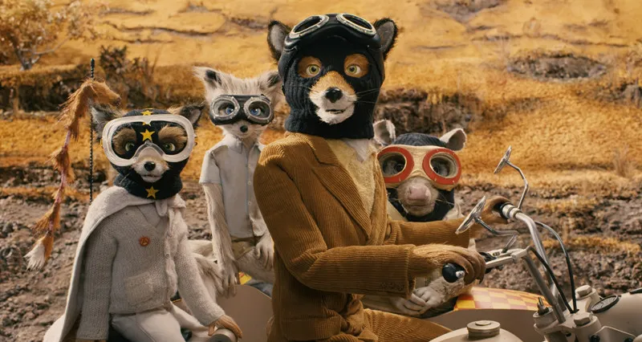

In a dystopian future Japan, a young boy travels to a massive trash-filled island to rescue his exiled pet dog after an outbreak of "canine flu".

In Anderson's first stop-motion animated film, a clever wild fox returns to his covert thieving ways against three mean-spirited local factory farmers, endangering his underground community.

Set in the fictional European Republic of Zubrowka between the World Wars, a meticulous concierge and his young lobby boy-protégé are framed for the murder of a wealthy elderly patron and the theft of a priceless Renaissance painting.